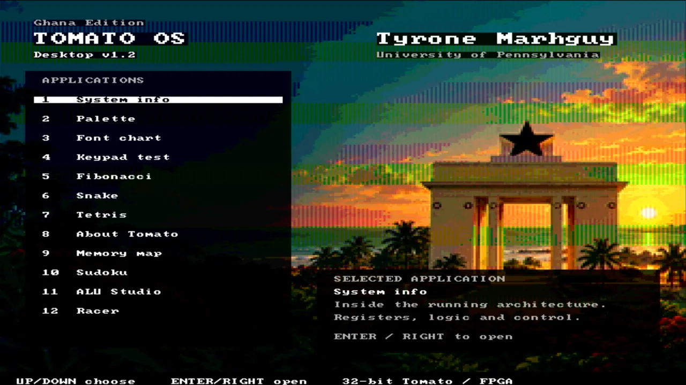

19
pseudos
Syntax sugar
CALL, BEQZ, LI expand to burns.

Software and tools
I write programs in Tomato assembly, assemble them into machine code, and run them on the FPGA computer. The next work is making more of the ALU’s compound operations useful through instruction mappings, compiler support, and better tools.
Instructions and labels describe the program I want the computer to run.
The assembler and mapping files turn that program into data the processor can use.
The FPGA supports software development while I build the remaining discrete boards.
The assembler holds no opcode table of its own — it reads tomato.v1.csv and tomato.v1.pseudo.csv at startup. Growing the machine's vocabulary is a data change, not a code change. Tomato OS is the largest program in the tree: menu, games, and HDMI chrome assembled from the same burns.
Change a pseudo in tomato.v1.pseudo.csv when you want sweeter syntax; run --selftest so the ROM image does not drift. Details: one press, one key.
| Layer | Job | Path |
|---|---|---|
| ROM table | Which opcodes exist (52 burns) | tomato.v1.csv |
| Pseudos | Macros that expand to burns (19 today) | tomato.v1.pseudo.csv |
| Assembler | Two-pass · CSV-driven | software/assembler.py |
| Tomato OS | Menu, quirks table, games | software/os/tomato_os.s |
| Regression | Boot · menu · games in sim | make -C hardware/fpga/core test |
The shipping demo has its own sheet: Tomato OS — controls, nine menu entries, framebuffer contract, memory map, build commands, and HDMI screenshots.
LA lowers to ADDI rd, r0, addr, so labels used with LA must sit below 0x1000. Code and read-only strings can live higher. Store the full pointer in a .word and pass it to puts when the text sits above the line — the OS quirk table does this; see Tomato OS memory map.
Verification proves the ALU. Tomato OS proves keypad MMIO, tile RAM, HDMI timing, and the menu loop on hardware someone can watch — plus pseudos and string layout at scale (32,768 GPR).
19
pseudos
CALL, BEQZ, LI expand to burns.
hdmi demo
Menu, games, tile desktop — Tomato OS sheet